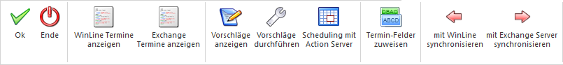

Über den Menüpunkt
1 WinLine START
1 Optionen
1 Synchronisation
kann der Abgleich von Kontakten und Terminen zwischen Exchange und WinLine vorgenommen werden, Voraussetzung dafür ist, dass im Programm WinLine START im Menüpunkt Parameter / Einstellungen im Register "Exchange" Exchange Verbindung angelegt haben.
Buttons

Ø OK
Mit Hilfe des Buttons "OK" bzw. der Taste F5 kann das Fenster gespeichert und geschlossen werden.
Ø Ende
Mit Hilfe des Buttons "Ende" bzw. der Taste ESC kann das Fenster geschlossen werden.
Ø WinLine Kontakte anzeigen
Mit Hilfe des Buttons "WinLine Kontakte anzeigen" können die Kontakte/Termine aus WinLine anzeigt werden.
Ø Exchange Kontakte anzeigen
Mit Hilfe des Buttons "Exchange Kontakte anzeigen" können die Kontakte/Termine aus Exchange anzeigt werden.
Ø Vorschläge anzeigen
Mit Hilfe des Buttons "Vorschläge anzeigen" können alle Kontakte/Termine beider Systeme angezeigt werden. Es werden jene mit einem Häkchen versetzt, die synchronisiert werden können, weil sie entweder neu sind oder eine Änderung beinhalten.
Ø Vorschläge durchführen
Mit Hilfe des Buttons "Vorschläge durchführen" können alle Kontakte/Termine beider Systeme laut der Hinterlegten Logik abgeglichen werden.
Hinweis
Mit "Vorschläge anzeigen" können die geplanten Änderungen angzeigt werden.
Ø Scheduling mit Action Server
Mit Hilfe des Buttons "Scheduling mit Action Server" können Zeiträume für den Datenabgleich definiert werden, die dann vom "Action Server" abgearbeitet werden sollen. Bei jeder Aktion kann festgelegt werden, ob die Aktion periodisch (alle x Sekunden, Minuten, Stunden, Woche etc.) oder einmalig durchgeführt werden soll.
Ø Termin-Felder zuweisen
Wenn eine gültige Lizenz für das Modul "WinLine SYNC" vorhanden ist, kann dieser Button angewählt werden. Die Darstellung des Fensters ändert sich und es können weitere Exchange Felder definiert werden bzw. von welchen WinLine CRM-Eingabefeld der Inhalt in welches Exchange Feld übergeben werden soll.
Nähere Informationen finden Sie im Bereich "Synchronisation WinLine Termine".
Ø Mit WinLine synchronisieren
Mit Hilfe des Buttons "mit WinLine synchronisieren" können die selektierten Kontakte/Termine des Exchange-Accounts an WinLine übergeben bzw. synchronisiert werden.
Ø Mit Exchange Server synchronisieren
Mit Hilfe des Buttons "mit Exchange Server synchronisieren" können die selektierten Kontakte/Termine von WinLne an den Exchange-Server übergeben bzw. synchronisiert werden.